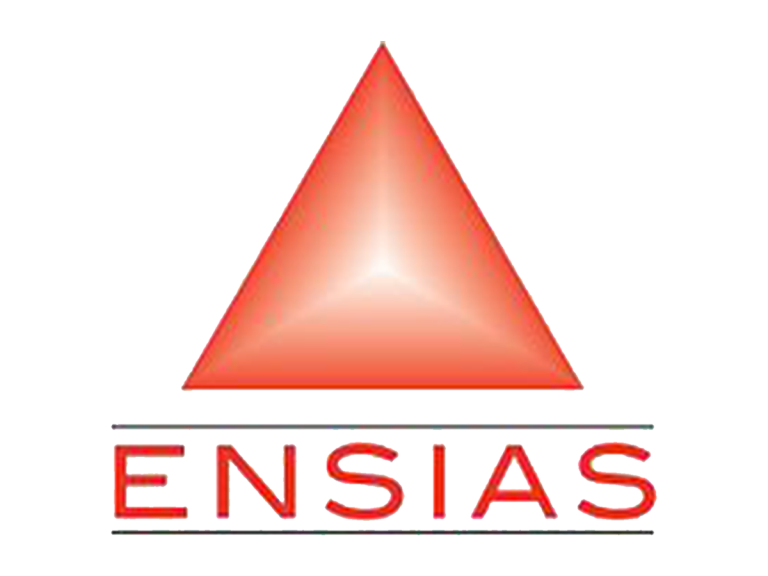
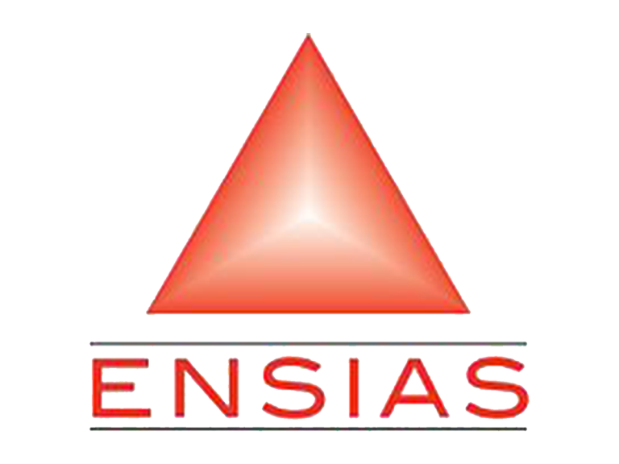

UML
Home

UML
Home
Le language UML
Qu'est-ce que UML ?
Le langage de modélisation unifié (UML) est un langage graphique utilisé pour modéliser et documenter des systèmes logiciels. Il offre un ensemble de diagrammes pour représenter différentes perspectives d'un système.
Diagrammes UML courants :
- Diagramme de classe : Représente les classes, leurs attributs et leurs relations.
- Diagramme de séquence : Montre comment les objets interagissent dans une séquence temporelle.
- Diagramme de cas d'utilisation : Modélise les interactions entre acteurs et cas d'utilisation.
Exemple de diagramme de classe UML :
Avantages de l'utilisation d'UML :
- Clarification de la conception du logiciel.
- Communication efficace entre les équipes de développement.
- Documentation précise du système.